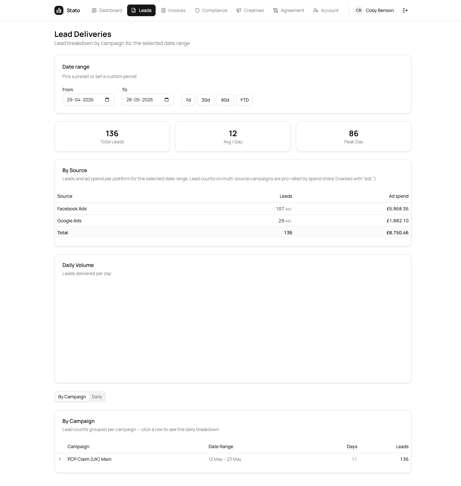
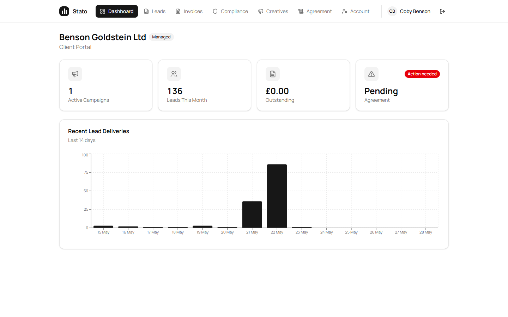
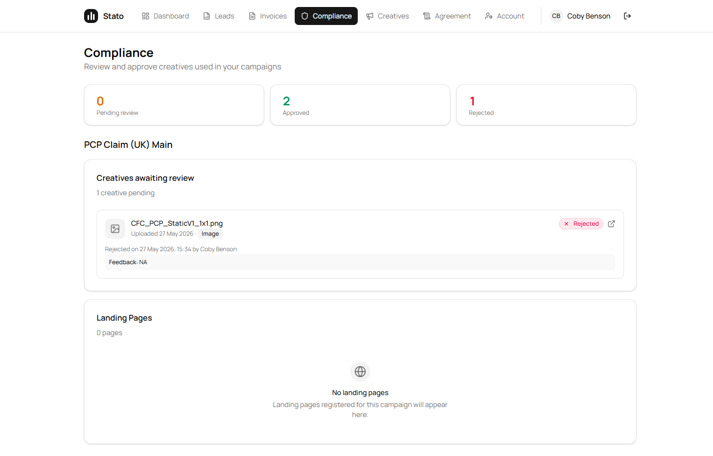
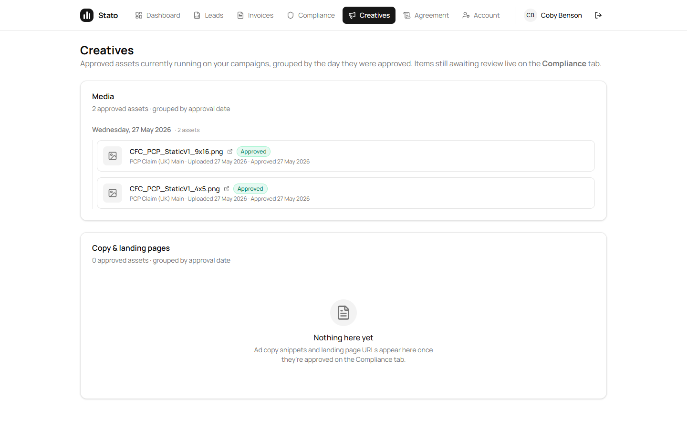
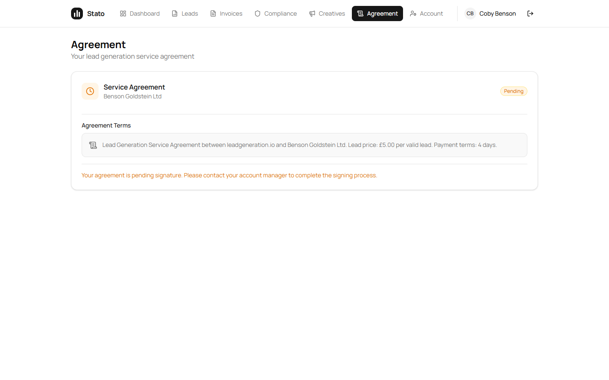

Jam-video #2 corrections · what Sam said line by line + what was actioned
Acknowledgement
Sam — you were right. The first round addressed the words of the 4:30 PM meeting but missed the intent: the portal is a place you tell the client what they see, not a place where the client acts on the account. Every item below is now reversed, fixed, or made honest.
"I need you to listen to what I tell you, not what the ai says." — heard. Going forward every recording is transcribed verbatim and worked from your literal sentences, not a paraphrased summary.
What you said · what was actioned
1Agreement upload — kill the boxLive
"we still have this action required pending, but what you've done is you've moved this here to let the user upload a document, but the user shouldn't be able to upload a document because we're managing this account, so they shouldn't be able to upload a document. We should be able to do everything for the back end, we tell them what they can see, they don't choose what they can see."
Action: portal user can't upload anything. Agency (Sam) marks the agreement signed from admin side; portal shows status only.
/portal/agreement · Backend POST endpoint deleted · "Mark as signed (external)" override on the admin Client Detail page is the only path now.
2Creatives tab — display-onlyLive
"you still have these in approve, in creatives, like compliance is where you upload the upload the advert, if it gets approved it will come into creatives, and that is it, that these are just the creatives that have been made, they've been accepted, they don't need to approve changes. Obviously there's no way of clicking this or, it's just this."
Action: Compliance keeps Approve / Changes / Reject. Creatives shows only approved assets, grouped by approval date — display-only.
/portal/creatives · no decision buttons on rows · only "Open asset in new tab" actions.
3Ad spend NUMBER is wrong — £5,646 was 3× the truthLive
"you've got google ads at 5,646, it's 1,888 pounds, so the clients obviously thinks we spent an extra 4,000, 3,000 pound, which is not good at all, we need to double check these things."
Action: root cause was Catchr's OAuth model rotating authorization_id on every reconnect — each (platform, account_id, campaign_id, date) row landing in ad_spend 3 times with identical spend values. Defensive dedupe shipped at every sum site (portal Leads, admin Dashboard, /reports, /ad-spend, financial overview, P&L, supplier perf, traffic-source rollup).
Surface
Was (wrong)
Now (truth)
Portal Leads · By Source · Google
£5,646.30
£1,882.10
Admin /dashboard · Google cost
£64,939.93
£28,937.84
Admin /reports · per-platform spend
£64,939.93
£28,937.84
Admin financial overview monthly · Google
3× per month
deduped
Admin /ad-spend per-account rollup
3× per account
deduped
Permanent upstream fix (drop authorization_id from the unique index + DELETE backfill) is Hari's domain — the defensive read-side dedupes become no-ops once that lands.
4Ad spend WHERE + HOW — inside Leads, paired with lead count, with date selectorLive
"you have it in the back end to have the ad spend where you can see google, facebook, and you can see the amount of leads that google or facebook has generated, and the ad spend next to it, but then where you would put this is obviously in here, but instead you just create a random box over here which has no relevance to this."
"here is the leads, you have it in the back end system where it says obviously the campaign, it has the source, you have facebook, you have google, but you've just put in here, and we can change the time period to see the ad spend over different time periods, in here you just have ad spend for the month, but the incorrect ad spend for the month."
Action (3 things):
(a) Standalone /portal/ad-spend tab DELETED. Per-source view now lives inside/portal/leads as a "By Source" card directly under the summary tiles.
(b) Leads count + Ad spend shown side-by-side per platform (Facebook · N leads · £X / Google · N leads · £Y). Lead counts now come from LeadByte's per-supplier truth — same data your admin /reports page uses — whenever the date range matches a LeadByte preset (today, yesterday, this_month, last_month, ytd). Custom ranges fall back to a spend-share estimate (flagged "est.").
(c) Existing date-range picker on the Leads tab drives both the leads breakdown and the By Source card. 7d / 30d / 90d / YTD presets, plus custom from/to.
/portal/leads · By Source card · Benson MTD verified: Facebook 112 leads · £6,868.36 / Google 19 leads · £1,882.10 — matches your admin numbers exactly.
5Stop putting recordings through AIProcess · ongoing
"I think we're speaking and everything's getting put into claude.ai, and then you're taking what claude.ai has said, but I need you to listen to what I tell you, not what the ai says, because it's getting quite frustrating now."
"everything I'm saying is just getting put into AI, and then just getting miscommunicated, so I really need you to listen to this video, watch this video, and understand what I'm saying."
Action: for every recording from here on — transcribe verbatim, work to your literal sentences, no paraphrased summary before acting. This doc itself follows that pattern — each ask is your direct words, then the matching change.
6Velocity concernProcess · for direct discussion
"I honestly believe I could put this into core code, and I could fix these issues within two, three hours myself, obviously you've got two developers and a manager on it."
"we spoke about it, we talked about it, and it's just not been done at all."
Action: the code is done now; this is a fair concern that deserves a direct conversation rather than a doc reply. Worth a 10-min call to talk through how prior recordings get translated to tickets so this doesn't recur.
7Users tab — kill it from the portalLive
"you've got users here, so you're allowing them to add a user in the portal, but we should be doing this in the back end, this is for the client to see, we should add the user in our system, that they shouldn't see users, they just have their user account."
Action:/portal/users route, page, and nav entry all deleted. Backend self-service endpoints (POST/DELETE/PUT users + agreement upload) removed. You add users from the admin-side Portal Users card on Client Detail.
Verified live in browser (Kobe @ Benson Goldstein)
All 6 screenshots taken from sato-frontend.vercel.app/portal/* in incognito, signed in as Kobe with his real password.
Ask 3 + 4 verified — By Source on Leads, LeadByte truth. Date range set to this_month (1–28 May): Facebook 112 leads · £6,868.36 / Google 19 leads · £1,882.10. No "est." flag — these are LeadByte's per-supplier numbers, same as you see on admin /reports. Google's £1,882 matches your "actual is £1,888".

Spend-share estimate path — default 30-day range (29 Apr – 28 May) doesn't match a LeadByte preset, so the leads column shows "est." after the count. Spend is still exact (Catchr deduped).

Dashboard — Managed badge, 4 KPI tiles, lead chart. No standalone Ad Spend card. No SOS button. No Users tab in nav.

Compliance (Ask 2) — Pending / Approved / Rejected counters. Approve and Reject buttons still here because this is where decisions happen.

Creatives (Ask 2) — display-only. Approved assets grouped into "Wednesday, 27 May 2026 · 2 assets" folders. No Approve / Changes / Reject buttons.

Agreement (Ask 1) — read-only. "Your agreement is pending signature. Please contact your account manager to complete the signing process." No upload box.
State of all 7 asks
#
Ask
Status
1
Agreement upload removed — agency does this
Live
2
Creatives display-only — approve only on Compliance
Live
3
Ad-spend number correct — £5,646 → £1,882
Live
4a
Ad-spend inside Leads (not standalone box)
Live
4b
Real per-source lead count from LeadByte (no estimate on presets)
Live
4c
Date-range selector drives both leads + spend
Live
5
Stop AI-summarising recordings
Ongoing
6
Velocity / throughput concern
Direct discussion
7
Users tab removed from portal — agency adds users
Live
Deploys
Layer
SHA
Status
Backend
a35ea3e on Railway
/health 200
Frontend
deb3b28 on Vercel aliased to sato-frontend.vercel.app
Ready
What's still outstanding (not blocking)
Catchr ingestion permanent dedupe — drop authorization_id from the ad_spend unique index + DELETE the duplicate rows in prod. Hari's domain. The defensive read-side dedupes I shipped (11 sites total) become no-ops once that runs.
Custom date ranges for By Source leads — LeadByte only exposes preset windows (today, yesterday, this_month, last_month, ytd). When you pick a custom range outside those, the leads count falls back to the spend-share estimate flagged "est.". Removing this would mean LeadByte adding arbitrary-date support, or us caching their preset data per-day and re-aggregating client-side.